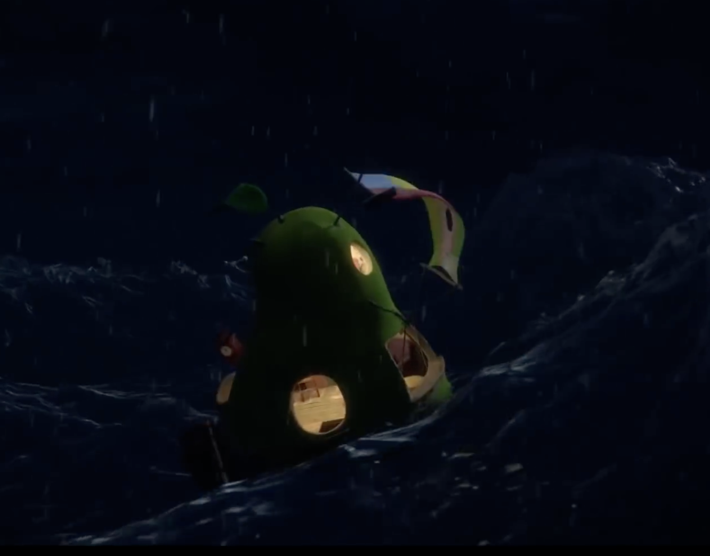

Sebastian og Mitcho er hjemme, med det mystiske frøet og vurder hva de skal gjøre med det.
Klikk kanppen for å starte
Sebastian og Mitcho er hjemme, med det mystiske frøet og vurder hva de skal gjøre med det.

Historien slutter. de forsetter å ha en vanlig dag. OG kvits forsetter og bestemmer.
Kvist er sur og sier at de må fjerne pæren med en gang. Hva skal de gjøre med ananasen?
Forskerne ser på ananas sier det er en helt vanlig pære bare veldig stor. så for å kunne flytte den må vi fjerna alt innholdet
De må ta noen valg og det fort for de det skal regne og det kan ødelegge all tingende de har

Alle er glade og dere er klare til å fjerne ananas

Kvist har blir så sur av at de har fått så mye oppmerksom het så han sparker pære så den begynner å trille nedover

Siden alt ble ødelagt har de ingen spor til å finne JB så de gir opp.
ananas triller fort mot havet, men siden dere gjorde alle innbyggerne sure. Gidder de ikke å prøve å stoppe den. Hvis dette ikke er deg så går du videre til grønt valg
Siden alle er så sure på dere får kvis låv til å skyte dere ned og JB blir aldri funnet. kvist forsetter å ødlegge byen sakte men sikkert og Solby blir en trist by
ananas begynner å flyte fort mot havet. skal dere hopp hut og prøve å svømme til bake? eller forsette ?
Dere havner i have og drukner. Slutt.....
Dere finner ut at dere trenger batterier til kompasset som viser veien til til øyen ? have skal dere gjøre. Og dere ser en stor kasse med Meloner.
Dere møter på piratene og de skyter dere ned så dere drukner. Siden dere ikke hadde noe mat å gi dem.
Når dere møter pratende blir de så glade for åt dere ar Meloner så i gave får dere batterier til kompasset.

dere møter på en sjø drage som til tilbyr dere til å ta dem til svarte havet hvis de seiler inn i munnen på den

Dere kommer dere til sorte havet men dere mister Professoren i en storm.
skal dere skjøre gjennom det sorte hav eller ta en omvei å skjøre rundt?